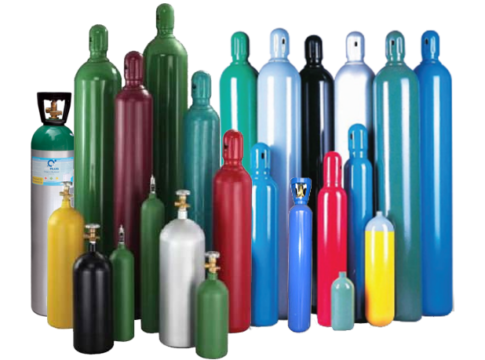
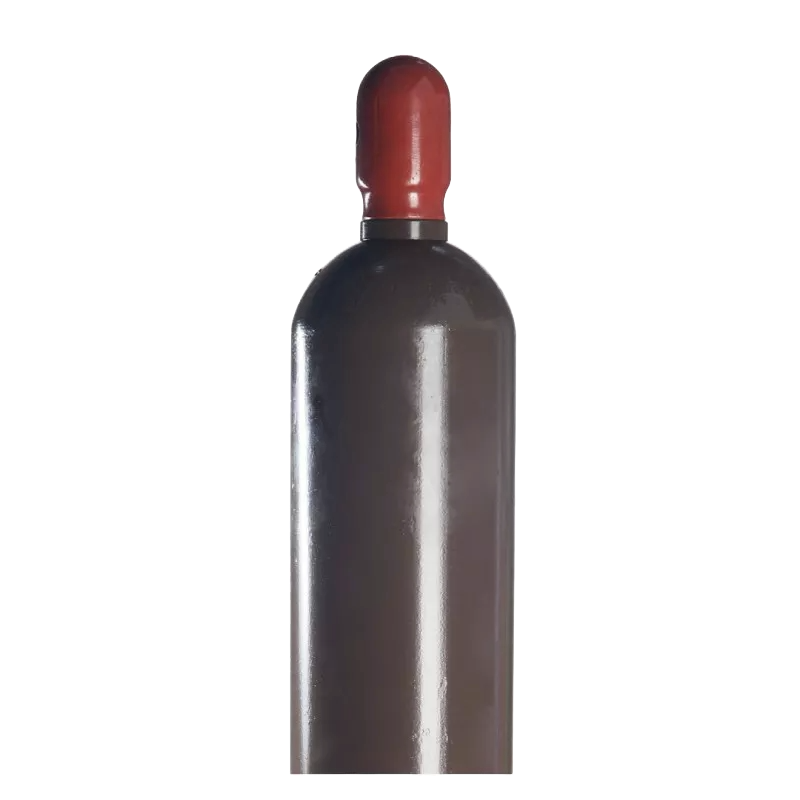
Gas inerte utilizado principalmente en procesos de soldadura (TIG y MIG), protege el metal fundido evitando la oxidación.
Contactos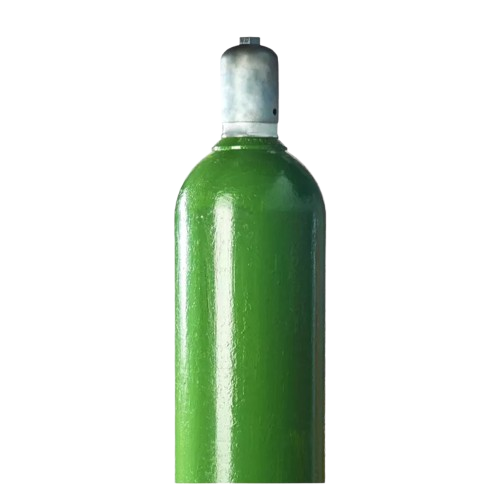
Se usa en corte y soldadura, favoreciendo la combustión para alcanzar altas temperaturas.
Contactos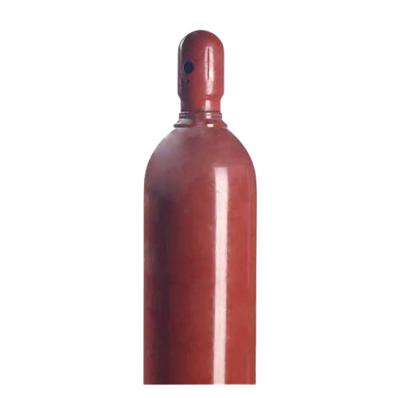
Gas altamente inflamable usado junto con oxígeno para soldadura y corte de metales.
Contactos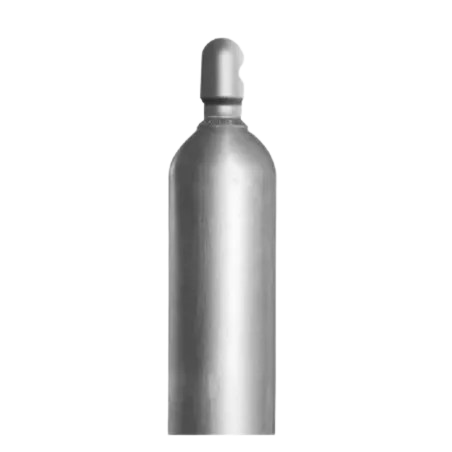
Gas utilizado en soldadura MIG y también en sistemas contra incendios; no es inflamable.
Contactos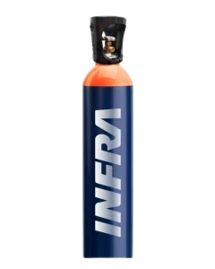
Combinación de gases (como argón y CO₂) usada para mejorar la calidad de soldadura según la aplicación.
ContactosGas de alta pureza utilizado en hospitales y atención médica para tratamientos respiratorios.
Contactos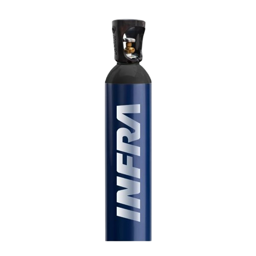
Gas inerte usado para inflado, conservación, pruebas de presión y procesos industriales.
Contactos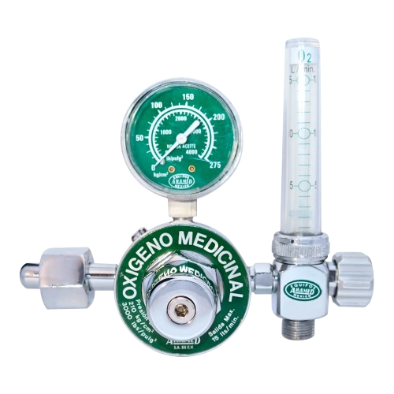
Dispositivo que controla la presión del oxígeno al salir del cilindro para un uso seguro.
Contactos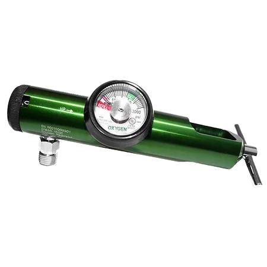
Tipo de regulador que se ajusta mediante un sistema de sujeción (yugo), común en tanques pequeños.
Contactos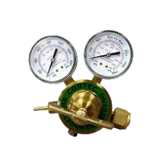
Especializado para trabajos industriales, permite controlar con precisión el flujo de oxígeno.
Contactos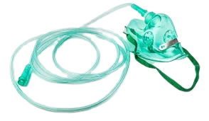
Equipo médico que permite administrar oxígeno directamente al paciente.
Contactos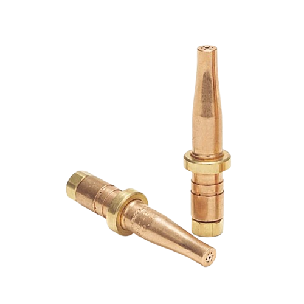
Accesorio que dirige la salida del gas en equipos de soldadura, permitiendo un trabajo preciso.
Contactos